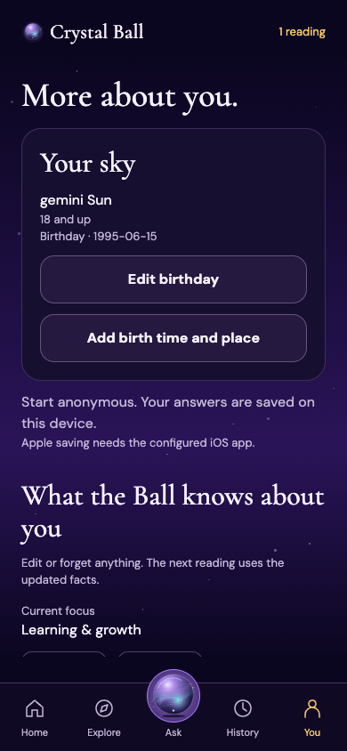
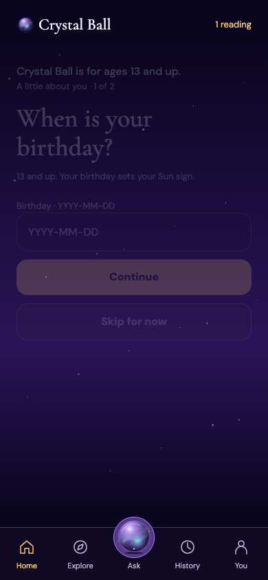
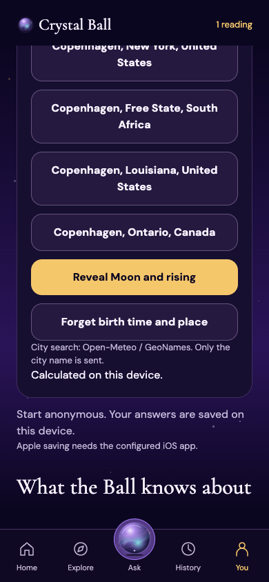
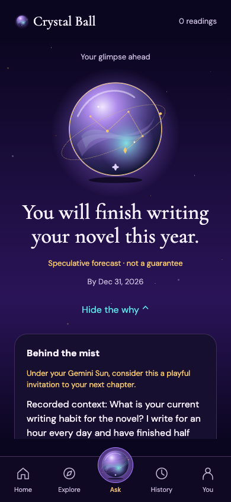
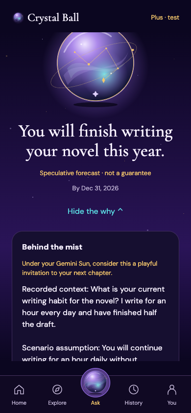
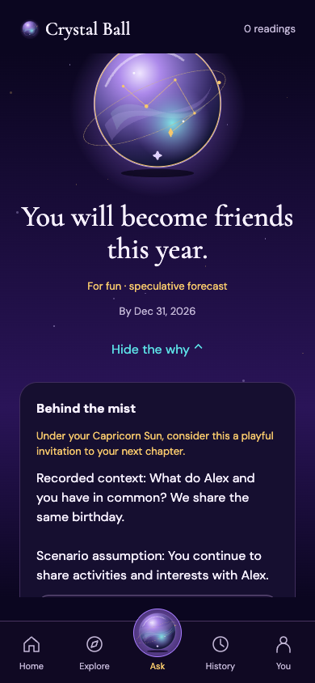
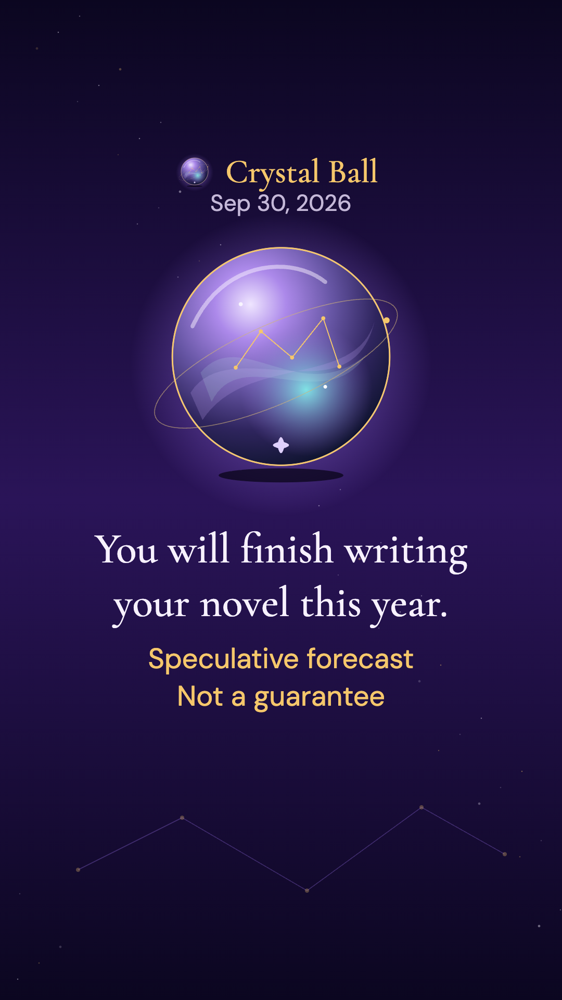
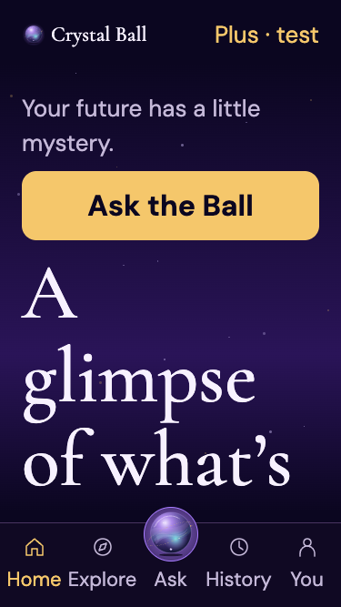

Birthday and focus
Saved in You; Sun sign and adult/teen/unknown age band.
Age gate
Under-13 stays blocked after reload; submitted birthday is not retained.
Optional birth details
Real city lookup, local Moon/rising ephemeris. No birthday sent to geocoder.
Short reading, real reasoning
One or two cards. Due date and astrology line; qualitative when numbers are missing.
Plus detail
Mock Plus exposes inputs, assumptions and source leads.
Teen Person reading
First name only. A shared-activity scenario; no notifications.
Still story only
Actual downloaded 1080×1920 PNG, visually checked for private-fact exclusion.